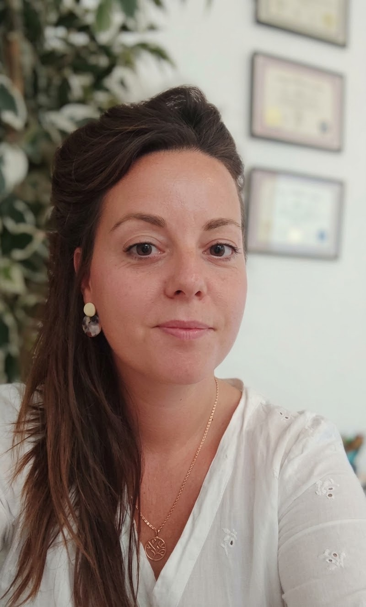

Vous avez en vous un pouvoir que vous ne connaissez peut-être pas encore.
Vous portez déjà en vous des ressources insoupçonnées, des possibilités qui ne demandent qu'à être découvertes.
À travers l'hypnose, venez à la rencontre de vous-même et découvrez tout ce qui peut encore s'ouvrir à vous.
Emplacement possible pour la photo de l'expérience, selon les droits d'utilisation.
Et si, pendant 5 jours, vous tentiez HypnoMorphosis ?
Laissez-vous guider, jour après jour, dans une première découverte qui pourrait bien faire émerger des possibilités que vous n'aviez pas envisagées.
Vous aurez accès à :
Un carnet à imprimer, des exercices d'introspection, des audios d'hypnose et une progression sur plusieurs jours.
21 jours pour dénouer, comprendre et se reconnecter à soi
21 jours pour revenir à soi après une séparation
Des thèmes qui demandent davantage de temps et d'introspection

« L'hypnose, ça sert à rien et pourtant ça change tout. »
Derrière HypnoMorphosis, il y a moi. Je suis Bérénice, ancienne infirmière urgentiste et aujourd'hui hypnothérapeute.
Lire mon histoire →